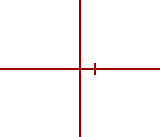
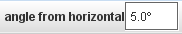

v orodni vrstici.
v orodni vrstici.Koordinatne osi

Koordinatne osi prikazujejo lokacijo izhodišča in naklon osi x koordinatnega sistema. Izhodišče na presečišču osi in pozitivna os x sta označena z oznako v bližini izhodišča. Pozitivna os y je vedno pravokotna glede na pozitivno os x v nasprotni smeri od urinega kazalca .
Ker so osi sled, imajo menu sledi, ki je dostopen v menuju Sledi v vrstici z menuji, pa tudi z desnim klikom v glavnem pogledu na video..
1. Prikaz osi
Osi prikažemo s klikom na gumb Osi v orodni vrstici.
2. Premikanje privzetega izhodišča

Izberemo in vlečemo izhodišče na želeno lokacijo v glavnem pogledu videa.
3. Nastavljanje naklona

Izberemo in vlečemo pozitivno os x in jo vrtimo okrog izhodišča. S sočasno tipko SHIFT lahko kote omejimo na inkremente po 5 stopinj.

Kot je prikazan v okencu na orodni vrstici. V to okence lahko želeni kot tudi neposredno vnesemo.
4. Zaklepanje osi
Zaklepanje osi preprečuje kakršnokoli spreminjanje izhodišča in naklona. Osi zaklenemo z vklopom lastnosti Zaklenjeno v ustreznem menuju nsledi.